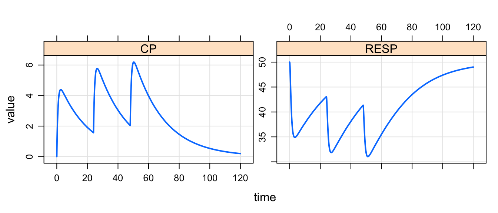
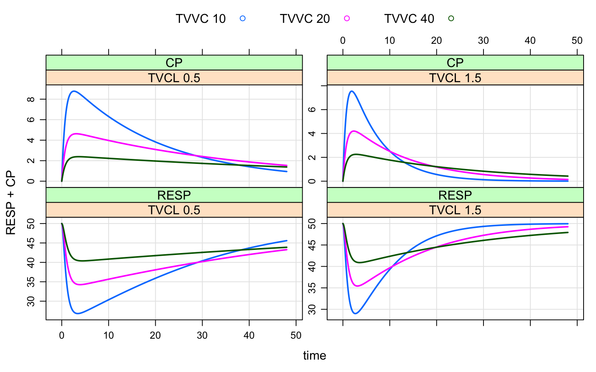
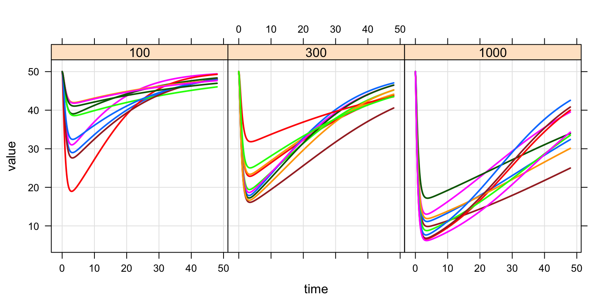

mrgsolve facilitates simulation in R from hierarchical, ordinary differential equation (ODE) based models typically employed in drug development. See the example below.
Resources
Please see mrgsolve.github.io for additional resources.
Installation
We recommend staying up to date with the development version
Otherwise, install the latest release on CRAN
Please be sure to see important install-related information here.
Ask a question
- Issue tracker (preferred) (requires GitHub account; ok for questions or issue reports)
Example
The model specification file is similar to other non-linear mixed effects modeling software
code <- '
$GLOBAL
#define CP (CENT/VC)
#define INH (CP/(IC50+CP))
$SET delta=0.1
$PARAM TVCL=1, TVVC=20, KA = 1.3, KIN=100, KOUT=2, IC50=10
$CMT GUT CENT RESP
$MAIN
double CL = exp(log(TVCL) + ETA(1));
double VC = exp(log(TVVC) + ETA(2));
RESP_0 = KIN/KOUT;
$OMEGA 0 0
$ODE
dxdt_GUT = -KA*GUT;
dxdt_CENT = KA*GUT - (CL/VC)*CENT;
dxdt_RESP = KIN*(1-INH) - KOUT*RESP;
$CAPTURE CP
'
The model is parsed, compiled, and dynamically loaded into the R session
- Information about the model is saved as an
Robject - Important model attributes can be updated in
Rwithout recompiling
Use mrgsolve as an interactive simulation tool for model exploration and sensitivity analyses
- Simulated data are returned as
Robjects - Input and output data are kept in memory in the
Rprocess; writing or reading to disk is never necessary (unless results are to be saved for later use).
. Model: demo
. Dim: 1202 x 6
. Time: 0 to 120
. ID: 1
. ID time GUT CENT RESP CP
. [1,] 1 0.0 0.00 0.00 50.00 0.000
. [2,] 1 0.0 100.00 0.00 50.00 0.000
. [3,] 1 0.1 87.81 12.16 49.72 0.608
. [4,] 1 0.2 77.11 22.78 49.03 1.139
. [5,] 1 0.3 67.71 32.04 48.11 1.602
. [6,] 1 0.4 59.45 40.11 47.06 2.006
. [7,] 1 0.5 52.20 47.14 45.96 2.357
. [8,] 1 0.6 45.84 53.25 44.87 2.663
out <-
mod %>% update(end=48) %>%
ev(amt=100) %>%
Req(CP,RESP) %>%
knobs(TVVC=c(10,20,40), TVCL=c(0.5,1.5))
Flexibility with input data sets
- Data set format that is likely familiar to modeling and simulation scientists
- No need to include observation records;
mrgsolvewill automatically insert
. ID amt evid cmt time dose
. 1 1 100 1 1 0 100
. 2 2 100 1 1 0 100
. 3 3 100 1 1 0 100
. 4 4 100 1 1 0 100
. 5 5 100 1 1 0 100
. 6 6 100 1 1 0 100
Input data are passed in as R objects
- Pass many different data sets or implement different designs in the same model code without recompiling
- Control simulation output from
Rto better manage memory
set.seed(1010)
out <-
mod %>%
data_set(.data) %>%
Req(RESP,CP) %>% obsonly %>%
carry_out(dose) %>%
mrgsim(end=48)